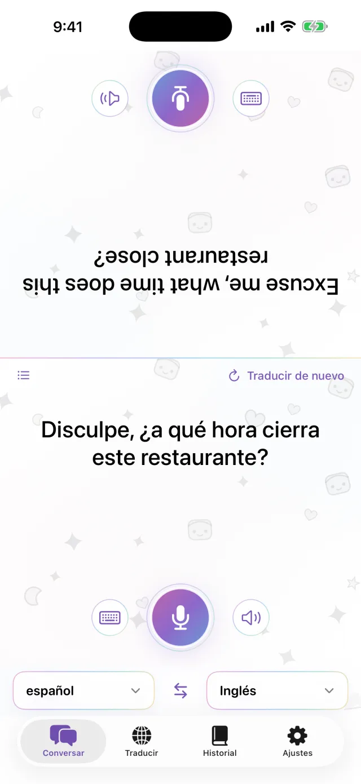
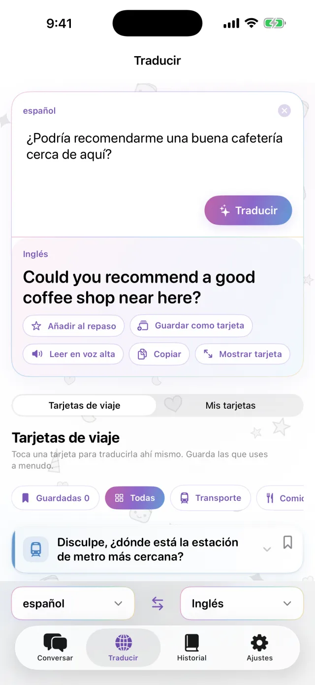
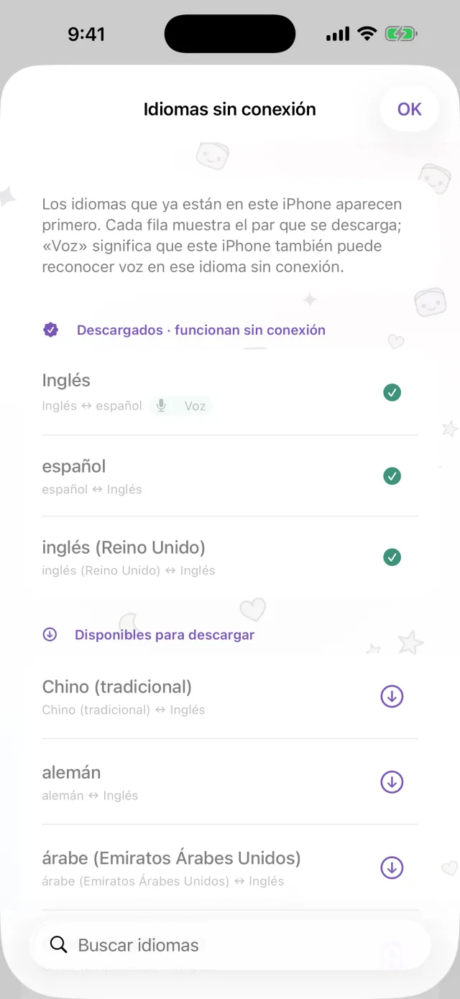
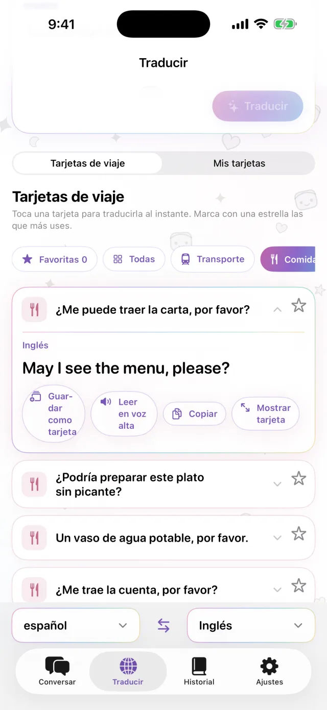
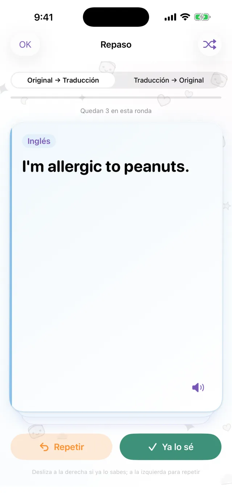

Traductor para iPhone
Traductor para iPhone
Pon el iPhone entre los dos.
Nada más.
Toca el micrófono y habla. La traducción aparece en la otra mitad de la pantalla, de cara a la otra persona. Cuando responde, funciona igual. Descarga los idiomas antes y podrás usarlo sin conexión.
Próximamente en el App Store- Unos 20 idiomas
- Sin conexión tras la descarga
- Sin registro

Escritura
¿No puedes hablar en voz alta? Escribe.
En un lugar tranquilo, o cuando la otra persona habla muy rápido, escribe directamente. Puedes ampliar la traducción a pantalla completa y mostrársela.
- Cópiala o haz que se lea en voz alta
- Intercambia los dos idiomas con un toque

Sin conexión
Traduce aunque no tengas conexión
La traducción, el reconocimiento de voz y la lectura en voz alta se ejecutan en tu iPhone. Descarga los idiomas que necesitas antes del viaje y podrás usarlos en el avión o antes de comprar una SIM. Lo que dices no se envía a ningún servidor y las grabaciones no se guardan.

Tarjetas de frases
Guarda lo que dices siempre
La dirección del hotel, una alergia alimentaria, la estación que buscas. Guárdalas como tarjetas y no tendrás que escribirlas otra vez. Toca una tarjeta y se traduce al idioma de la otra persona. Incluye tarjetas listas para transporte, comidas, alojamiento y compras.

Pro
Repasa las frases guardadas cuando toca
Toca la estrella de una frase para guardarla en el repaso. Si la recuerdas, vuelve a aparecer a los 1, 3, 7, 14 y 30 días. Si no, la verás de nuevo ese mismo día. Puedes ir del original a la traducción o al revés. Esta función es de Pro.

Útil para
- Pedir en un restaurante pequeño
- Decirle la dirección al taxista
- Explicar una alergia en la farmacia
- Dejar las maletas en la recepción del hotel
- Preguntar cómo llegar a un lugar
Míralo en 30 segundos
En este vídeo el modo avión está activado.
Lo básico
| Idiomas | Unos 20 (los idiomas que Apple traduce en el dispositivo) |
|---|---|
| Sin conexión | Sí, después de descargar los idiomas |
| Entrada de voz | Sí. Algunos idiomas solo admiten texto |
| Cuenta | No es necesaria |
| Precio | Gratis. Pro es de pago aparte (más abajo) |
| Requisitos | iPhone con iOS 18 o posterior |
- La primera vez necesitas conexión para descargar los idiomas.
- Los precios se muestran en tu moneda local en la App Store.
Gratis y Pro
Gratis
- Conversación cara a cara
- Escritura y pantalla completa
- Traducción sin conexión
- Tarjetas de viaje y 3 tarjetas propias
- Banner publicitario pequeño
Pro
- Sin anuncios
- Todas las tarjetas que quieras
- Historial de traducciones y repaso espaciado
Semanal, mensual o pago único.
Antes de viajar, descarga los idiomas.
Próximamente en el App StoreiPhone · iOS 18 o posterior · Descarga gratuita · Cómo funciona cada pantalla